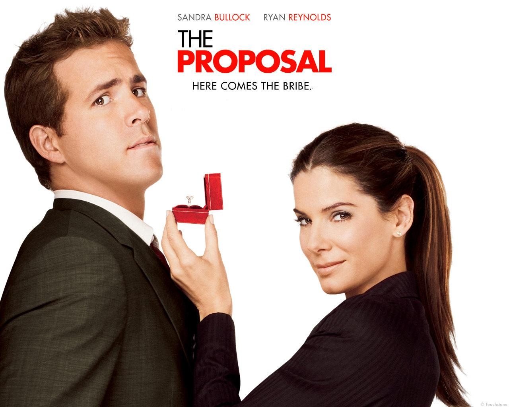

The Proposal (2009)
Directed by Anne Fletcher
About the Film

The Proposal follows Margaret Tate, a demanding Canadian book editor working in New York who faces deportation when her visa expires. To stay in the country and keep her job, she announces that she is engaged to her assistant, Andrew Paxton — without his knowledge. Forced to go along with the scheme, Andrew agrees on the condition that she gives him a promotion. The two then travel to Alaska to meet his family, and the fake engagement begins to feel very real.
Why I Love It
Sandra Bullock and Ryan Reynolds have chemistry that makes every scene enjoyable to watch, even when — or especially when — their characters are at their most awkward with each other. The film is consistently funny, but it also develops its characters enough that you genuinely care about the outcome.
Betty White as Andrew's grandmother Gammy is an absolute highlight. The Alaskan setting adds a warmth and character that you do not often see in romantic comedies, and the whole film has an easy, feel-good energy that makes it endlessly rewatchable.
Key Details
- Release year: 2009
- Genre: Romantic Comedy
- Runtime: 108 minutes
- Starring: Sandra Bullock, Ryan Reynolds, Betty White, Mary Steenburgen
- My rating: 9/10
Memorable Quote
"I'm sorry. I'm so sorry. For the last three years I have been treating you like someone who didn't matter, and you have been nothing but gracious and kind. I am sorry."
— Margaret Tate